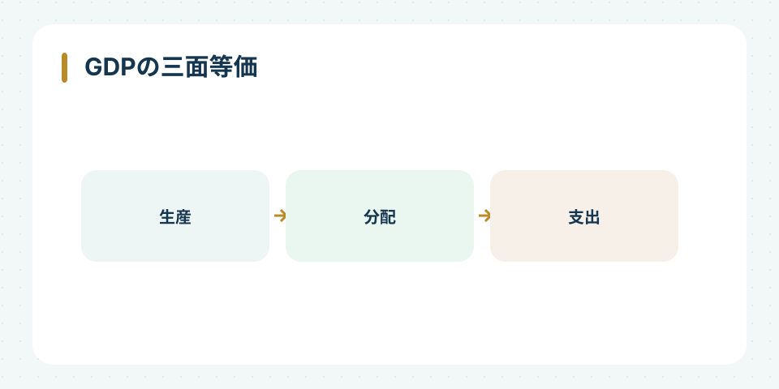

公共 / UNIVERSITY ENTRANCE EXAM
GDPとは？名目・実質GDPの違いをわかりやすく
GDP（国内総生産）は一定期間に国内で生み出された付加価値の合計です。名目・実質の違いや三面等価を理解すると、経済ニュースも読み解きやすくなります。
公
このページで学べること
GDPの三面等価と物価調整を例題で理解。要点を読んだら、最後の確認問題で理解度をチェックしましょう。
POINT 01
GDPは国内の付加価値の合計

単純に売上高を全部足すと、原材料や部品が二重計上されます。そこで新しく生み出された付加価値に注目します。
例｜パンの生産
製粉業者が小麦粉を100円で販売し、パン屋がその小麦粉を使ってパンを250円で売ったとします。単純化すると製粉業者の付加価値100円とパン屋の付加価値150円の合計で250円。
POINT 02
名目と実質の違い
名目GDPはその年の価格で評価。実質GDPは物価変動の影響を調整したものです。商品の数が同じでも価格だけ上がれば名目GDPは増えますが、実質GDPは増えません。
実質GDP ≈ 名目GDP ÷ GDPデフレーター × 100
この式ではデフレーターの基準を100として表記しています。
POINT 03
三面等価の原則
生産・分配・支出の3面で見たGDPは理論上等しくなります。支出面では 個人消費＋投資＋政府支出＋純輸出 などに分けて考えます（実際の統計には細かな調整があります）。
GDPは国内という場所の概念。国籍だけで生産を分類するわけではありません。
PRACTICE
確認問題に挑戦！
全3問。答えを考えてから「解答と解説を見る」を押してね。
Q01
中間財の売上をそのままGDPに足すと起きる問題は？
解答と解説を見る ＋
正解・解答例
二重計上
最終財までの生産段階が重複して数えられる。
Q02
物価だけが上昇し生産量が不変なら、主に増えるのは？
解答と解説を見る ＋
正解・解答例
名目GDP
物価変動を調整する実質GDPは変わらない。
Q03
GDPの三面等価の3つは？
解答と解説を見る ＋
正解・解答例
生産・分配・支出
3つの見方が理論上一致します。
今日のまとめ
GDPは国内で生まれた付加価値。実質GDPは物価の影響を調整する。
ここまで読めたら、ひと区切り。
理解できたら学習済みにチェックして、次の記事へ。
記事について
StudyMasterの無料学習コンテンツです。AIを補助的に用いて作成しています。例題・解答は公開前にご自身でも確認してください。内容に誤りがある場合は、学校の教科書などと照合してください。
公開・更新：2026年11月12日